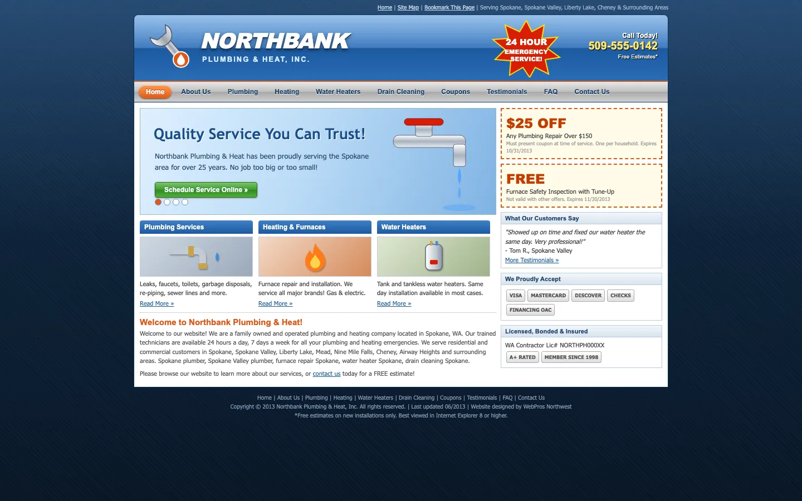

 BeforeAfter
BeforeAfter
Call in one tapWhen the basement is flooding, the phone number should be the biggest thing on the page.
Less to readThe old site said everything at once. The new one says the important part, big.
Built for phonesMost emergency calls start on a phone, so the layout started there too.